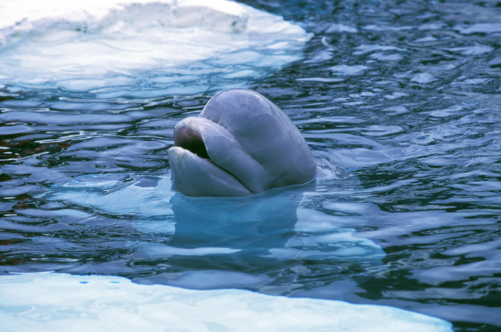
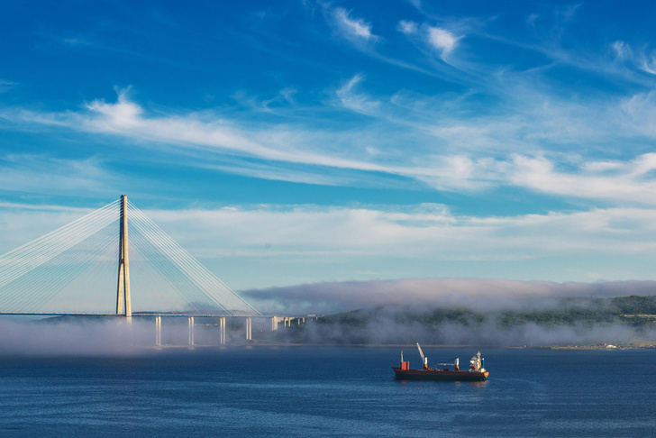
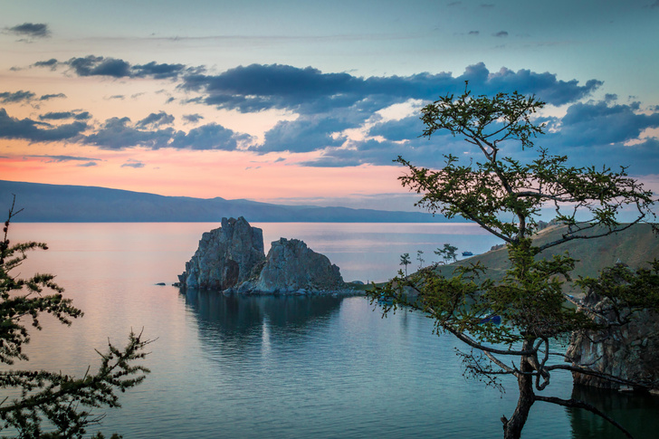
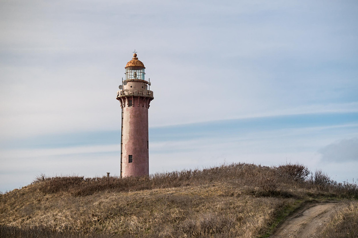

Заброшенная биологическая станция в Дальних Зеленцах
Дайвинг в России становится все более популярным,
тем более что акватория нашей страны поражает своей мистической красотой и удивительными обитателями.
Вдохновляемся историями о водных приключениях и выбираем, куда отправиться с аквалангом.
Но помните, даже в самых красивых местах для дайвинга не всегда может быть безопасно.
Погружение под воду за Полярным кругом дает уникальный опыт, который не могут
предложить ни Турция, ни Египет, ни другие прославленные курорты.
Здесь красивые скальные подводные стенки, имеющее суровый фундаментальный вид.
«Даже затонувшие корабли воспринимаются по-другому, кажутся более величественными,
— рассказывает Павел Колобов. — Создаётся ощущение особенной глубины и пространства».
Заброшенная биологическая станция в Дальних Зеленцах
Подводный мир Белого моря богат и своеобразен.
Поверхность скал поросла мягкими кораллами, актиниями, губками и гидроидами.
Обитатели местных глубин — огромные медузы и морские звезды —
и при низких температурах чувствует себя комфортно.
Здесь водятся белуха, нерпа, морской заяц, гренландский тюлень.

Белуга
Город находится на полуострове и с трех сторон омывается Японским морем.
Владивосток пользуется популярностью среди поклонников дайвинга благодаря
возможности погрузиться на затонувшие объекты.
Правда, в такое путешествие следует отправляться только в паре с опытным инструктором

Вид на Русский мост, Владивосток
Байкал
Самое глубокое озеро на планете аквалангисты посещают круглый год.
Здесь отличные условия для погружения для новичков (только с инструктором),
но много интересного найдут для себя и профессионалы подводного плавания.
Основные центры дайвинга сосредоточены в Иркутске.

Остров Ольхон
Сахалин — самый крупный остров России, находится в Тихом океан и вместе с Курильскими островами
(также отличной локацией для погружения) входит в состав Сахалинской области.
Здесь обитают разноцветные актинии, различные виды рыб, а также крупные морские животные вроде сивучей.

Маяк острова Сахалин